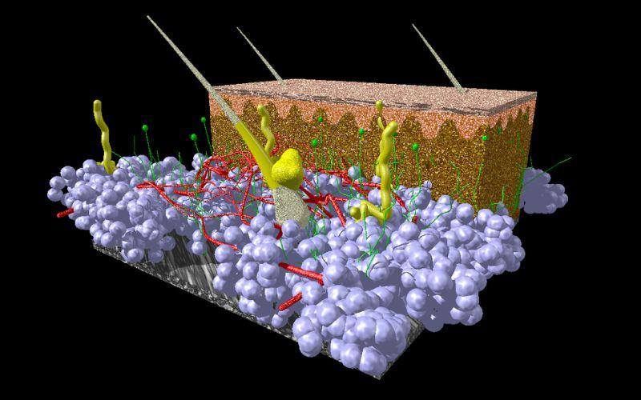

HIPODERMIS
.webp)
El tejido subcutáneo, también llamado hipodermis, es una capa de tejido adiposo adherida a la cara profunda de la dermis. Aumenta la movilidad de la piel, aísla térmicamente el cuerpo, actúa como amortiguador y es fuente de energía. La hipodermis está llena de nervios, vasos y linfáticos subcutáneos. Contiene específicamente el músculo platisma en la cabeza y el cuello.
Uniones mucocutáneas
Estas son regiones del cuerpo donde hay una transición de la mucosa a la piel. En tales regiones, el epitelio pasa a la epidermis, la lámina propia cambia a la dermis y el músculo liso se convierte en músculo esquelético. Ocurre en los orificios en áreas como los labios, las fosas nasales, la conjuntiva, la uretra, la vagina, el prepucio y el ano.
 .jpg) La hipodermis consiste en: 1) fibroblastos; 2) tejido conectivo laxo contentivo de vasos sanguíneos y linfáticos, fibras nerviosas y corpúsculos de Vater-Pacini; 3) adipocitos; 4) tejido adiposo contentivo de ~50% de la grasa corporal; 4) leucocitos y macrófagos.
La hipodermis consiste en: 1) fibroblastos; 2) tejido conectivo laxo contentivo de vasos sanguíneos y linfáticos, fibras nerviosas y corpúsculos de Vater-Pacini; 3) adipocitos; 4) tejido adiposo contentivo de ~50% de la grasa corporal; 4) leucocitos y macrófagos.
Los corpúsculos de Vater-Pacini son cápsulas ovoides macroscópicas llenas de fluido y penetradas por un axón nervioso mielinado. Son receptores importantes de estímulos táctiles, específicamente presión y vibración. La hipodermis es penetrada por continuaciones de apéndices epidérmicos, tales como pelos, glándulas sudoríparas apocrinas y glándulas mamarias.
Gestación
pagina principal
.